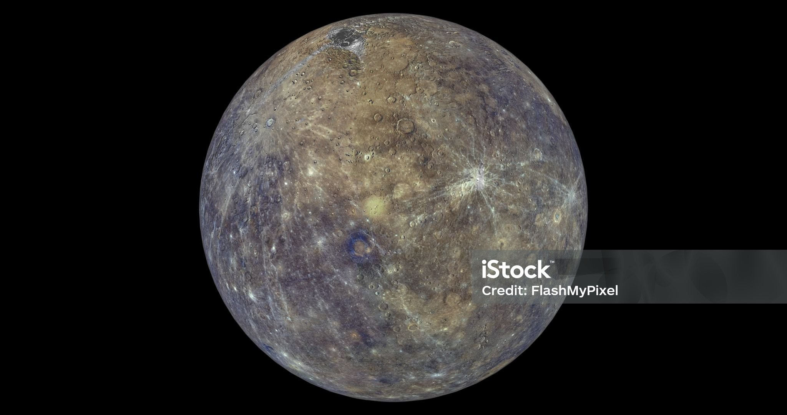
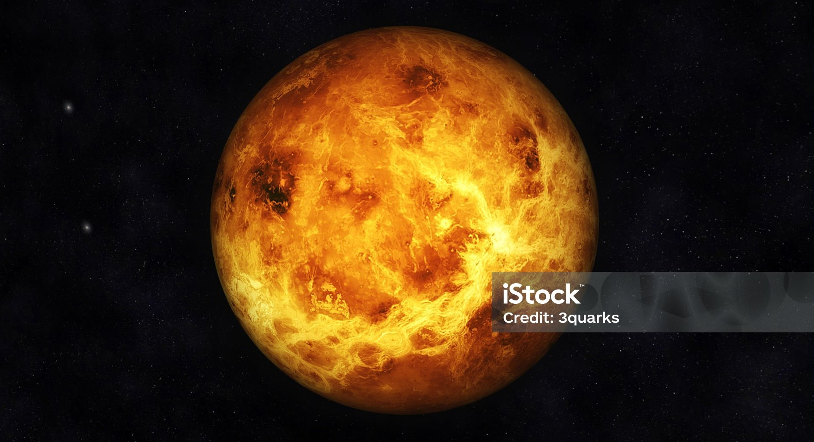
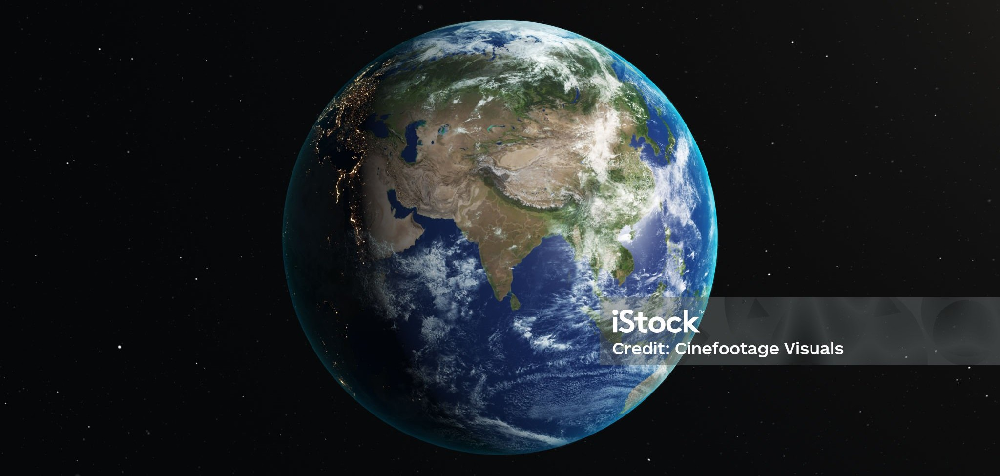
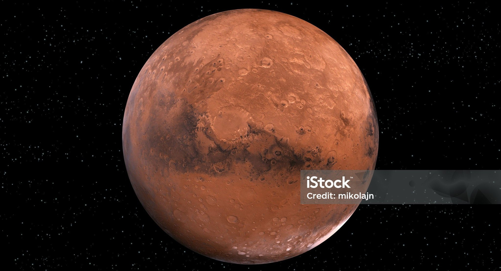
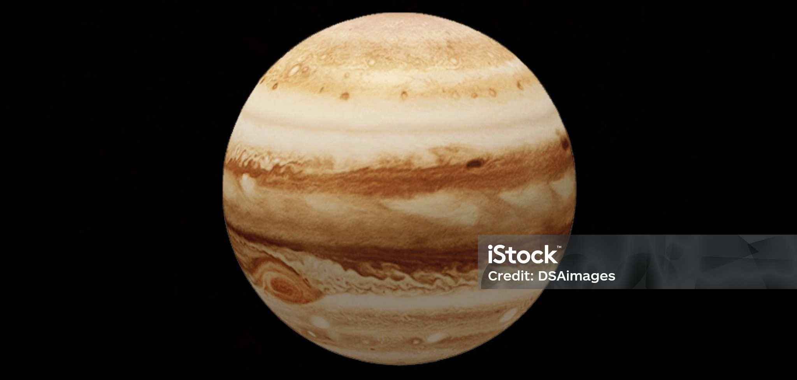
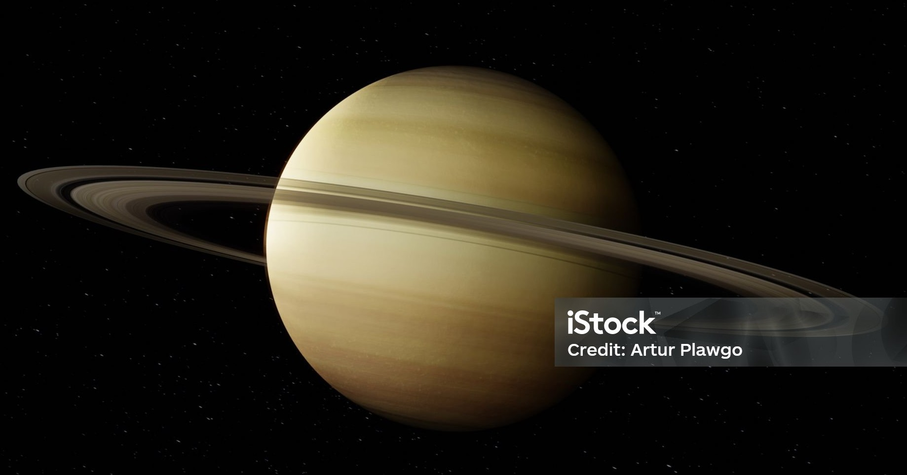
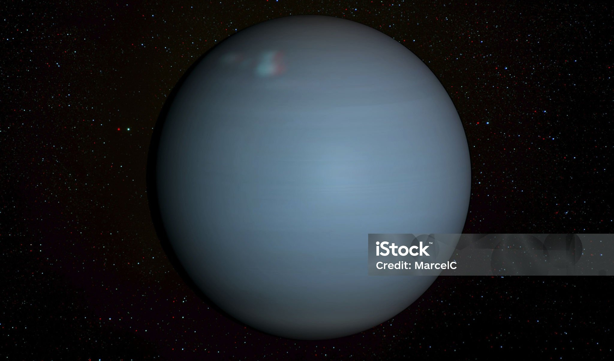
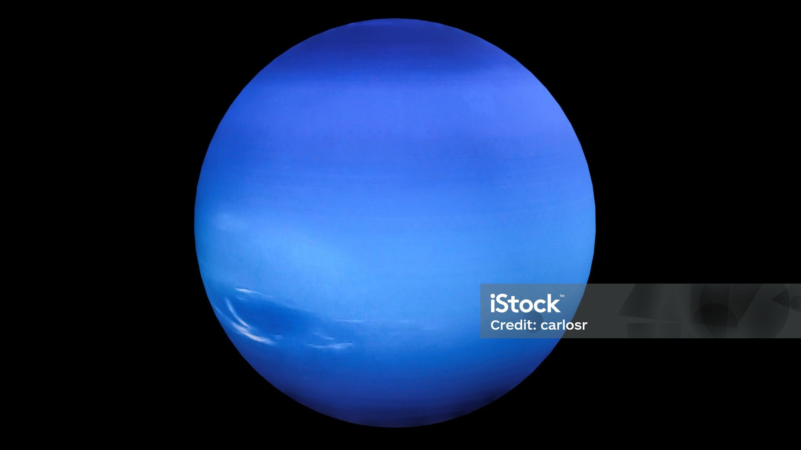

Academy Universe
Where Knowledge Begins

Academy Universe adalah tempat awal perjalanan di ARSVERSE.
Di sini, setiap orang dapat mempelajari berbagai ilmu dan keterampilan yang dibutuhkan untuk memasuki dunia teknologi—mulai dari programming, software development, AI, data, hingga teknologi lainnya. Bukan sekadar belajar teori, Academy Universe mendorong setiap individu untuk memahami, mencoba, dan menghasilkan sesuatu.
Learn. Practice. Grow.
Community Universe
Where People Connect

Teknologi tidak dibangun sendirian.
Community Universe menjadi tempat bertemunya orang-orang dengan minat, keahlian, dan latar belakang yang berbeda. Di sinilah ide bertukar, pengalaman dibagikan, dan koneksi terbentuk. Mulai dari ngoding bareng, diskusi, sharing session, meetup, hingga berbagai kegiatan komunitas.
Karena terkadang, sebuah ide besar dimulai dari:
"Eh, bikin bareng yuk."
Connect. Share. Collaborate.
Code Universe
Where Ideas Become Code

Di Code Universe, teori mulai berubah menjadi sesuatu yang nyata.
Tempat untuk ngoding, membangun project, bereksperimen dengan teknologi, berkolaborasi, dan menyelesaikan masalah melalui kode. Dari project kecil hingga aplikasi yang benar-benar digunakan orang.
Karena di sini prinsipnya sederhana:
Don't just learn code. Build with it.
Code. Build. Create.
Match Universe
Where People Find Their Team

Sebuah ide mungkin dimiliki satu orang.
Tetapi untuk mewujudkannya, sering kali dibutuhkan sebuah tim. Match Universe mempertemukan orang berdasarkan skill, minat, ide, dan tujuan.
Developer bertemu designer. AI engineer bertemu business person. Founder bertemu co-founder.
Dari sekumpulan individu: menjadi sebuah tim.
Dan dari sebuah tim: menjadi sebuah karya.
Find. Match. Build Together.
Labs Universe
Where the Impossible Gets Explored

Di sini, rasa ingin tahu menjadi bahan bakar.
Kalau Code Universe adalah tempat membangun, Labs Universe adalah tempat bereksperimen. Berbagai teknologi baru dapat dieksplorasi—mulai dari AI, robotics, IoT, automation, computer vision, hingga emerging technologies.
Tidak semua eksperimen akan berhasil.
Dan itu tidak masalah.
Karena kegagalan adalah bagian dari proses menemukan sesuatu yang baru.
Explore. Experiment. Discover.
AI Universe
Where Intelligence Meets Technology

AI Universe adalah ruang eksplorasi kecerdasan buatan di dalam ARSVERSE.
Mulai dari Machine Learning, Generative AI, AI Agent, Computer Vision, NLP, hingga AI Automation. Tujuannya bukan sekadar menggunakan AI, tetapi memahami bagaimana AI dapat digunakan untuk menciptakan solusi, meningkatkan produktivitas, dan membuka kemungkinan baru.
Karena masa depan teknologi bukan hanya tentang mesin yang semakin cepat.
Tetapi teknologi yang semakin cerdas.
Imagine. Train. Create.
Venture Universe
Where Ideas Become Businesses

Tidak semua project harus berhenti sebagai project.
Venture Universe menjadi tempat bagi ide dan project yang memiliki potensi untuk berkembang menjadi sebuah startup atau bisnis teknologi. Di sini, tim belajar memahami masalah, menemukan kebutuhan pengguna, membuat MVP, melakukan validasi, hingga membangun model bisnis.
Perjalanannya:
Idea → Team → MVP → Market → Startup
Karena teknologi yang hebat bukan hanya tentang apa yang bisa dibuat, tetapi juga masalah apa yang bisa diselesaikan.
Think. Validate. Launch.
Factory Universe
Where Technology Gets Built

Jika Venture Universe menemukan peluang, Factory Universe membangun solusinya menjadi produk nyata. Factory Universe dapat menjadi tempat lahirnya berbagai software, platform, AI product, dan teknologi yang dikembangkan oleh ARSVERSE.
Di sinilah proses development berjalan lebih serius:
Research → Design → Development → Testing → Launch → Scale
Bukan hanya membicarakan masa depan.
We build it..
Build. Launch. Scale.